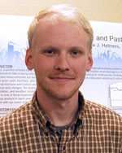

Objective 4 - Scientists & Staff
Social and Economic Research
Obj. 4 - Perform comprehensive life cycle analyses (LCA) of the proposed practices and evaluate the socio-economic-environmental willingness of producers and farmers to adopt new cropping systems through feedback loops between social science research, biophysical field research, monitoring, and modeling of agricultural production systems.
Jump to:
Arbuckle
 |
J. Gordon Arbuckle, Jr. |
Anex
 |
Robert P. Anex, Jr. (Rob) |
Benning
Jamie L. Benning |
Ingels
| Not Pictured: | Chad G. Ingels |
| Principal Investigator; Obj. 4; Obj. 5 | |
| Iowa State University | |
| Ext. Program Specialist |
Tyndall
| Not Pictured: | John Tyndall |
| Principal Investigator; Obj. 4 | |
| Iowa State University | |
| Faculty Web site | |
| Assistant Professor - Nat Resource Ecology & Mngt |
|
Wright Morton
 |
Lois Wright Morton Operations; Principal Investigator; Obj. 4; Obj. 5 Iowa State University Project Director Professor - Sociology |
||
|
PhD Graduate Student (Statistics) |
 |
PhD Graduate Student (Sociology) |
|
|  |
MS Graduate Student (Sociology) |
||